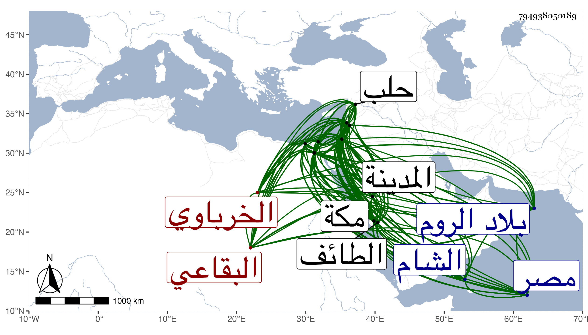

0902Sakhawi.DawLamic.ITO20230111-ara1.EIS1600.794938050189
Biography ID: 794938050189
إبراهيم بن عمر بن حسن الرباط بضم الراء بعدها موحدة خفيفة ابن علي بن أبي بكر برهان الدين وكنى نفسه أبا الحسن الخرباوي البقاعي نزيل القاهرة ثم دمشق وصاحب تلك العجائب والنوائب والقلاقل والمسائل المتعارضة المتناقضة ويقال أنه يلقب ابن عويجان تصغير أعوج . ولد فيما زعم تقريبا سنة تسع وثمانمائة بقرية خربة روحا من عمل البقاع ونشأ بها ثم تحول إلى دمشق ثم فارقها ودخل بيت المقدس ثم القاهرة للاستفتاء على أهلها وهو في غاية من البؤس والقلة والعرى ثم عاد إليها ورجع عن قرب فقطنها واشتغل بها يسيرا ولم يعرف له كتاب في الفقه والنحو ولا في غيرهما بل قال العلامة أبو القسم النويري وناهيك به لصهر صاحب الترجمة : قل لصاحبك وعينه يشتغل بالنجوم أنه لم يعلم له بعد هذه المقالة فيه اشتغال ولذلك وصفه التقي القلقشندي مما سمعه ظنا من أخيه العلاء باللحن في قراءته وهو صحيح بالنسبة لألفاظ كثيرة يتوقف أعرابها على معانيها وكذا الكثير من مشتبه الرواة ويشهد له في النوعين كثرة رد الديمي عليه في قراءة أبي يعلى وكاتبه في السنن الكبرى للنسائي وغير ذلك بل اشتغاله في غيره أيضا بالهوينا وزعم أنه قرأ على التاج بن بهادر في الفقه والنحو وأنه قرأ على ابن الجزري جمعا للعشر في أثناء سورة البقرة وأنه أخذ عن التقي الحصني الشامي وغيره بها والتاج الغرابيلي والعماد بن شرف وآخرين ببيت المقدس وأخذ بالقاهرة عن الشرف السبكي والعلاء القلقشندي والقاياتي وشيخنا وطائفة منهم أبو الفضل المغربي وهو الذي أعلمه بالقاعدة التي تجرأ على كتاب الله بها وما علمته أتقن منا ولا بلغ مرتبة العلماء بل قصارى أمره إدراجه في الفضلاء وتصانيفه شاهدة بما قلته وتكسب بالشهادة عند أحد شيوخه الفخر الأسيوطي وغيره وبالنساخة وتعليم الأطفال وبغير ذلك وسافر في خدمة شيخنا إلى حلب وأخذ عن شيوخ الرواية بها وبغيرها ولم يمعن في ذلك أيضا بحيث ما علمته أكمل الستة أصول الإسلام وفوت بتقصيره الإكثار عن شيوخ كل واحد منهم رحلة وقرأ أشياء غيرها أولى منها لا لغرض كقراءته على العز ابن الفرات الجزء الثاني من حديث ابن مسعود لابن ساعد بإجازته من العز ابن جماعة بقراءته على الحسن بن عمر الكردي بحضوره له في الرابعة على ابن اللتي وكان في الموجودين من يرويه متصلا بالسماع وعند ابن الفرات الكثير مما انفرد به وسافر لدمياط واسكندرية وغيرهما وحج وأقام بمكة يسيرا وزار الطائف والمدينة وركب البحر في عدة غزوات ورابط غير مرة الله أعلم بنيته في ذلك كله ورقاه شيخنا فعينه في حياة الظاهر جقمق لقراءة الحديث بالقلعة ثم منعه الظاهر في حياته وأدخله حبس أولى الجرائم واستقر عوضه بابن الأمانة ولذا قال لأنه أي الأشرف اينال موافق للظاهر أي جقمق في الانسلاخ من شرائع الدين في الباطن مع أن هذا لم يكن عنده ما عند الظاهر من الصبر على إظهار خلاف ما يبطن من التمسك بالشرع وإظهار تعظيمه إقامة لناموسه انتهى . وقد أخذ عنه الطلبة وانجمع زعم على التصنيف والإقراء والنظم الذي فيه من الهجو ما لا يليق وكنت ممن سمعت بقراءته وسمع بقراءتي واستفاد كل منا من الآخر على عادة الطلبة في ذلك وترجمني في معجمه . ووقائعه كثيرة وأحواله شهيرة ودعاويه مستفيضة أهلكه التيه والعجب وحب الشرف والسمعة بحيث زعم أنه قيم العصريين بكتاب الله وسنة رسوله وأنه أبدى ببديهته جوابا مكث التقي السبكي واقفا عنه أربعين سنة وأنه لا يخرج عن الكتاب والسنة بل هو منطبع بطباع الصحابة مع رميه للناس بالقذف والفسق والكذب والجهل وذكر ألفاظا لا تصدر من عاقل وأمور متناقضة وأفعال سيئة وحقد تام وما أحسن قول شيخ الحنابلة وقاضيهم العز الكناني وكان قديما من أكبر أصحابه مما سمعه منه غير واحد من الثقات : والله أنه لم يتبع سنة واحدة وأنه لأشبه بالخوارج في تنميق المقاصد الخبيثة وإخراجها في قالب الديانة انتهى وقد قيل :
| تقول أنا المملوء علما وحكمة | وأن جميع الناس غيرى جاهل |
| فإن كان ما في الناس غيرك عالم | فمن ذا الذي يقضي بأنك فاضل |
وما أحقه بما ترجم هو به النويري المشار إليه حيث قال مما قرأته بخطه فيه رأيته من أفجر عباد الله يظهر لمن يجهله أثوابا من الدين وتنسكا يملك به قلبه ويغتال عليه دينه ليس يأمن من وقع بصره عليه على مال له ولا عرض بل ولا نفس له نفس شغفة بالشهرة ومشفة للعلو وعنده جرأة باللسان مفرطة أوصلته إلى حد التهور وقلبه ممتلئ مكرا وحسدا وكبرا وله في كل من ذلك حكايات تسود الصحائف وتبيض النواصي ما سكن في بلد إلا أقام بها شرورا وشحنها فجورا ولولا أعاذنا الله تعالى به من شدة طيشه وإعجابه برأيه لسعر البلاد وأهلك العباد إلى أن قال نقلا عن غيره أن أبا القسم قال له أن قال المالكية بالقتل قلت بالعصمة وإن قالوا بالعصمة قلت بالقتل ثم قال ولم يكن له في شيء من ذلك غرض معين إنما كان غرضه بالخلاف رجاء يرتب عليه ولايته القضاء انتهى وما علمت أحدا سلم من أذاه لا الشيوخ ولا الأقران ولا من يليهم من كل بلد دخله بالنظم وبالنثر حتى من خوله في النعم بعد الفاقة ... والعدم وأخذ بجاهه أمورا لا يستحقها كالنظر على جامع الفكاهين وعلى خان اويداني ... وجرت فيهما وقائع وكتدريس القراآت بالمؤيدية عقب أمين الدين بن موسى واستغرب الناس إذ ذاك وقوع مثل هذا في أمر لم يشهر به خصوصا مع وجود شيخ القراء بلا مدافع الشهاب بن أسد بل كاد أمر الزين جعفر السنهوري أن يتم فيه فقوى عليه بجاه مخدومه ولم يرع له حق مساعدته له عند المحب بن نصر الله الحنبلي حيث أحضر له مصنفا عمله في التجويد فتوقف في تقريضه حتى شهد عنده جعفر بأنه أجاده وعمل البقاعي بحضور الشرف المناوي إجلاسا ضبط عنه أنه من عمل شيخه أبي الفضل المغربي له ثم كاد الناظر أن يخرجه عنه لأمر اقتضاه عنده في غاية القبح والشناعة فبادر ورغب عنه الشهاب المذكور لكونه من أصحاب الناظر وحاباه لعدم توقفه عن الإمضاء له وخالف المخدوم المشار إليه غرض أستاذه الأشرف اينال في الخوف من غائلة تقديمه فإنه قال فيما صح لي عنه للشرف بن الخازن قبيل سلطنته لو نفست للبقاعي لأخرب الدنيا ثم لما تسلطن زبره في ارتفاعه على الشريف الكردي فإنه بعد أن زال عزه أسمعه من المكروه ما يقابله عليه الله حتى قال لمن حكاه لي من الثقات والله لقد أزال البقاعي اعتقادي من كل فقيه وخيلني من صحبة كل أحد أو نحو ذلك هذا مع أنه بعد موت أستاذه وهو في أثناء محنته حين سكنه بالقرب من السابقية رأسه حين شكوى بعض الترك من جيرانه له بنقيبين وجلوسهما في مسجده حتى يرفعانه إلى حاكمهما لخوضه في عرض ذاك التركي فحضر إلى التركي ولا زال يتلطف به حتى صفح وغرم هو للنقيبين بل وأنعم عليه إذ ذاك بستين دينارا وحتى القاياتي الذي زعم أنه لازمه كثيرا وأنه قرأ عليه في أصول الدين والمنطق وسمع دروسه في الفقه وأصوله والنحو والمعاني والبيان ومن دروسه في الكشاف قال فيه أنه لا يزال غلس الظاهر دنس الأثواب سمج اللحية قال ولم نعلم لذلك سببا إلا كثرة إخلافه للوعد قال ولم أر مثل ولايته في كثرة التقلب وتوالي العظائم واضطراب الأمور وكثرة القال والقيل حتى لقد قلعت على قلة أيامها وقصر زمنها من قلوب الناس كثيرا مما غرسه فيها من المحبة قال على أني لم أر بعيني أوسع باطنا منه يكون في غاية البغضة للإنسان وهو يريه أنه أقرب الناس عنده ولا أدق مكرا ولا أخفى كيدا ولا أحفظ سرا ولا أنكى فعلا يذبح الإنسان كما قالوا بفطنه وهو يضحك ولا أرضى اعتذارا رأيته مطل إنسانا في غاية اليقظة بقضية هو أمره بفعلها أكثر من ثلاث سنين إلى آخر كلامه بل قال عن شيخ الإسلام ابن حجر إن فيه من سيء الخصال أنه لا يعامل أحدا بما يستحقه من الإكرام في نفس الأمر بل بما يظهر له على شمائله من محبة الرفعة وأنه يغلط ويلج في غلطه ووصفه بشيخ نحس وكتب تجاه بعض من ترجمه شيخنا في بعض مجاميعه انتقادا يرجع إلى العلو ووقف عليه شيخنا وضمه لما يعلمه من فجوره وتعدى في تراجم الناس وزاد على الحد خصوصا في كتابه عنوان الزمان في تراجم الشيوخ والأقران الذي طالعته بعد موته وملخصه المسمى عنوان العنوان بتجريد أسماء الشيوخ والتلامذة والأقران وناقض نفسه في كثيرين فانه كان يترجمهم أولا ببعض ما يليق بهم ثم صار بعد مخالفتهم له في أغراضه ونحو ذلك يزيد في تراجمهم أو يغير ما كان أثبته أولا كما فعل مع الأمين الأقصرائي فإنه قال فيه بأخرة أنه يكون مع كل من علم قوة جانبه ويهمل أمر الضعيف وإن كان منقطعا إليه وأنه يتقرب إلى ذوي الجاه بما يحبون وأنه أحدث في مسجد النبي صلى الله عليه وسلم إمامة الحنفية تفريقا بين كلمة المسلمين وتشعيبا لأركان الدين وكذا بعد علمه بعدم إنزاله المنزلة التي أنزل نفسه بها ونحو ذلك ككونه لم يضفه أو ينتقد عليه ما يظفر به من خطأه فنسأل الله كلمة الحق في السخط والرضا ولتناقضه الناشئ من أغراضه كان كلامه في المدح والقدح غير مقبول عند المتقنين من أئمة المعقول والمنقول وما أحسن قول بعضهم :
| إن البقاعي البذيء لفحشه | ولكذبه ومحاله وعقوقه |
| لو قال أن الشمس تظهر في السما | وقفت ذوو الألباب عن تصديقه |
إلى غير ذلك من مجازفاته كوصفه التيزيني بالتحري في شهادته وطعنه في شهادة شيخ الناس قاطبة العز عبد السلام البغدادي حمية للشهاب الكوراني لكونه توسل به في طلب المناسبات من بلاد الروم وما اكتفى بذلك حتى التزم له بإشهار جمع الجوامع له الذي شحنه بالإساءة على من اجتمع له مع العلم وتحقيقه القطبية والولاية والجلال المحلي وأشنع وأبشع تجريحه لحافظ الشام ابن ناصر الدين بالتزوير وكأغاليطه في المواليد والوفيات والأنساب وتصحيفه مما أضربت عن بسطه اكتفاء بمصنف حافل أفردته لها لكثرتها وقبحها وذكرتها مختصرة مضمومة لغيرها في ذيل القراء والمعجم وترجمة شيخنا ومن قبلي ذكرها ابن فهد والزين رضوان والبرهان الحلبي ومن المتأخرين ابن أبي عذيبة ولكنه كان إذ ذاك أشبه في الجملة وكذا أفردها غيري بل اعتنى بعضهم بجمع أهاجي الشعراء فيه في مجلد ومنه قول العلاء بن اقبرس :
| لك الحمد الجزيل بلا امتنان | وفضل بالعطاء بلا نزاع |
| فطهر قلبنا من كل غل | وجنبنا الخبيث من البقاع |
وقد روينا عن إمام دار الهجرة ملك بن أنس رحمه الله أنه قال أدركت بهذه البلدة يعني المدينة أقواما لم تكن لهم عيوب فعابوا الناس فصارت لهم عيوب وأدركت بها أقواما كانت لهم عيوب فسكتوا عن عيوب الناس فنسيت عيوبهم لله در القائل :
| لا تهتكن من مساوي الناس ما ستروا | نبيتك ... الله سترا من مساويكا |
| واذكر محاسن ما فيهم إذا ذكروا | ولاتعب أحدا منهم بما فيكا |
وقد رددت عليه غير مسئلة له في عدة تصانيف منها الأصل الأصيل في تحريم النقل من التوراة والإنجيل والقول المألوف في الرد على منكر المعروف وممن رد عليه في الثانية الشهاب المتبولي الحسيني وقرضه له الكافياجي فأبلغ من أن المصنف ليس بذلك وأنشد فيه لغيره :
| يا مدعي الحب لمولاه | من ادعى صحح دعواه |
| من ادعى شيئا بلا حجة | لا بد أن تبطل دعواه |
ولنفسه :
| من ادعى العلم ولم يوصف به | فذاك قد عرض للنقص |
| فلعلم معروف لأربابه | يظهر بالنطق وبالفحص |
وكذا رد ابن أبي عذيبة مقاله في السفطي حيث قال ترجمه البقاعي بترجمة مظلمة وذاك لما كان بينهما من الشر فالذي ينبغي أن لا يسمع كلامه فيه ونحوه قوله في ترجمة ابن حامد وقول البقاعي في فوته في جزء أبي الجهم لا عبرة به إنما الفوت لأخيه . ولما علم مقت الناس له وإسماعهم إياه كل مكروه من تكفير فما دونه بل رام المالكي أن يرتب عليه مقتضى ما أخبرت به البينة العادلة من كونه قال أن بعض المغاربة سأله أن يفصل في المناسبات التي عملها بين كلام الله وقوله بأي ونحوها دفعا لما لعله يتوهم فترامى على الزيني بن مزهر حتى عززه وحكم بإسلامه بعد أن جبن عن مقاومة المالكي فيها غير واحد من أعيان النواب ورغب عما كان باسمه كالميعاد بجامع الظاهر والمسجد الذي يعلوه سكنه وله في أمرهما قعاقع وفراقع ولم أطرافه وتوجه إلى دمشق وهو في غاية الذل فأنزله متصرفها بالمدرسة الغزالية وأعطاه مشيخة القراء بتربة أم الصالح وأحسن هو وغيره سيما التقي بن قاضي عجلون له فلم يتحول عن طباعه حتى نافره أهل دمشق أيضا إلى أن قاسى ما يفوق الوصف وعاداه أصدقاؤه فيها حتى أنه رام حين اجتياز العسكر بها المرافعة فيهم عند أميره فخذل أعظم خذلان وعارض وهو هناك في حجة الإسلام أبي حامد الغزالي ولمح بالحط عليه وقال أن قوله ليس في الإمكان أبدع مما كان كلام أهل الوحدة من الفلاسفة والإسلاميين القائلين بأن الله هو الوجود وقال أيضا أنه وجهه بما لا يليق حيث قال لو فرض أحسن من هذا الوجود لكان تركه بخلا وعجزا وكذا حط على التاج بن عطاء الله وصرح عن نفسه بأنه يبغض ابن تيمية لما كان يخالف فيه من المسائل وتحرك الناس من جمهور الطوائف عليه وراسل يستفتي وبذل معه الشمس الأمشاطي قاضي الحنفية الجهد ولم يتدبر تذكير الناس بمساعدته الأمر القديم المقتضي لتعويل صاحب الترجمة عليه في كائنته ومع ذلك فاستمر يكايد ويناهد حتى مات بعد أن تفتت كبده فيما قيل في ليلة السبب ثامن عشر رجب سنة خمس وثمانين وصلى عليه من الغد بالجامع الأموي ودفن بالحمرية خارج دمشق من جهة قبر عاتكة ولم يصل عليه التقي بن قاضي عجلون وغيره وأوصى بكل ما كان بخطه من تصنيفه وغيره لابن قريبه المحلى وسافر إلى الشام فأخذها وهو الذي استقر في جواليه المصرية وأما جوالية الشامية فكان هو رغب عنها قبيل موته لعبد النبي المغربي أحد من لم عليه في الشام . ورثى نفسه قبل موته بمدة وهو في القاهرة فقال في أبيات كان القاضي عز الدين الحنبلي يستكثرها عليه ويقول لعله ظفر بها لغيره وأقول كأنه لمزيد حبه في مدح نفسه انبعثت سجيته لها :
| نعم إنني عما قريب لميت | ومن ذا الذي يبقى على الحدثان |
| كأني بي أنعى إليك وعندها | ترى خبرا صمت له الأذنان |
| فلا حسد يبقى لديك ولا قلى | فتنطق من مدحي بأي معان |
| وتنظر أوصافي فتعلم أنها | علت عن مدان في أعز مكان |
| ويمسي رجال قد تهدم ركنهم | فمدمعهم لي دائم الهملان |
| فكم من عزيز بي يذل جماحه | ويطمع فيه ذو شقا وهوان |
| فيا رب من يفجا بهول بوده | ولو كنت موجودا إليه دعاني |
| ويا رب شخص قد دهته مصيبة | لها القلب أمسى دائم الخفقان |
| فيطلب من يجلو صداها فلا يرى | ولو كنت جلتها يدي ولساني |
| وكم ظالم نالته مني غضاضة | لنصرة مظلوم ضعيف جنان |
| وكم خطة سامت ذويها معرة | أعيذت بضرب من يدي وطعان |
| فإن يرثني من كنت أجمع شمله | بتشتيت شملي فالوفاء رثاني |
| وإلا نعاني كل خلق ترفعت | به هممي عن شائن وبكاني |
وممن رثى نفسه قبل موته أبو العباس أحمد بن يحيى بن زيد بن ناقة الكوفي وقال ابنه أبو منصور أنشدني قبل موته بساعة :
| وكم شامت بي إن هلكت بزعمه | وجاذب سيف عند ذكر وفاتي |
| ولو علم المسكين ماذا يصيبه | من الذل بعدي مات قبل مماتي |
وفيه نوع شبه بما تقدم . ذكر الإشارة لشيء من مناقضاته مما بسطته في ترجمته : أنكر على الشمس العاملي قراءة سيرة البكري لما فيها من الكذب وأخذ ما بأيدي الكفار من التوراة والإنجيل عنهم مع تصريح بعض اليهود بكون نسخته سقيمة وأنه كان يقابلها معه والقارئ اليهودي اعتمد الحر إلى في تفسيره مع كونه كما قال الذهبي فلسفي التصوف ولم يخالفه شيخنا فيه وكفر ابن الفارض قال التكفير أمر عظيم لا ينبغي الإقدام عليه إلا بنص صريح إلى آخر كلامه وكفر ابن الفارض بل قال لكوني قلت لم يصل إلي ما نسب إليه من الشعر عنه بسند صحيح ونحن لا نكفر بأمر محتمل سيما ولا فائدة في تكفيره وإنما الفائدة في التنفير من المقالة أنني ملت مع ابن الفارص وعذلني العز الحنبلي وابن الشحنة فلم يفد وصف الشحنة بالكذب والنحس والبهتان وأنه أعظم رؤس أهل السنة ونحوه تكذيبه للخطيب أبي الفضل ثم اعتماده عليه في تجريح غيره صريح بمجازفة الأمين الأقصرائي حيث وقف قاضي المحلة أوحد الدين بن العجيمي في عرض ولده بأوصاف زعم أنه لا يستحقها لكونه ربما توقف في صرف معلومه في أوقافها ثم أخذ خطه له متأيدا به في تصانيفه ونحوه وصفه لإمام الكاملية بأمر عظيم لا يقبل قوله معه ثم جاءه ليستعين به في كائنة ابن الفارض وكذا بالغ في الوقيعة في الأمير يشبك الفقيه ثم خضع له وبالغ في إجلاله وفعل مثل ذلك مع الزيني بن مزهر قام بإنكار المولد بطنتدا وبسيس مع القائمين في إبطاله ثم توجه مع مخدومه بردبك إليه ونحوه قيامه في إنكار الذين يطوفون في رمضان بالشبابة ونحوها ليلا ويسمون بالمسحرين ثم سماعه للعمال بالآلة على الدكة عند بردبك أيضا قام يمنع جامع القضاة من أبواب جامع الفكاهين حين كان ناظرا عليه وعطل هو الانتفاع بالمسجد المجاور لبيته على المصلين بوضع أمتعته وأمتعة غيره ونحو ذلك زعم عدم منازعته للفقهاء في وظائفهم ثم شاقق المباشر لوقف الميعاد الذي باسمه في جامع الظاهر ليثبت له ما أفتيت بزيادته له في معلوم الوظيفة بل رام أخذ دكان من وقف آخر ليحوزها إلى وظيفته فكفه عن ذلك قاضي الحنفية وكذا كان اقتلاعه لأصل الوظيفة بطريقة غير مرضية ونازع من بيده بنزول شرعي وظائف كانت باسم الشهاب أحمد بن إبراهيم الأذرعي لما كتبته في سنة اثنتين وثمانين وثمانمائة خاصم ناصر الدين الزفتاوي أحد النواب وجمع فيه جزءا وسماه أشلاء الباز على ابن الخباز ثم قرأ عليه كتاب النسائي وصيره في شيوخه وجاء السيد النسابة ليحضر فماقته وجافاه بحيث رايت السيد احمر وجهه وكاد أن يبكي هذا مع كون جماعة من شيوخه كالشهاب الكلوتاتي في زاوية الحنفي بحضرته والجمال البدراني قرؤه عليه ما اكتفى بهذا حتى كتب بخطه في ترجمته ما يقابله الله عليه ونقل عنه في ترجمته الكذب الصراح هذا مع معرفته بإجلال شيخنا له بحيث أنه لم يكن يتخلف عن القيام له إذا دخل عليه وربما لم يعلم بدخوله إلا بعد جلوسه فيستدرك القيام له وأبلغ منه قوله في الولوي بن تقي الدين البلقيني قاضي الشام ما نصه : وكان معروفا بالمجاهرة بأنواع الفسق والانقطاع إلى الخلاعة والسخرية والإضحاك للأكابر ثم روى عنه فقال حدثني القاضي الفاضل البارع المفنن ولي الدين وساق شيئا ونحوه قوله في العلاء لقلقشندي أنه حدثه بحضرة شيخنا بشيء وصدقه شيخنا عليه قال وإلا فهو إذا حدثك بحديث وجدت قلبك غير ساكن إلى جميع ما يقوله وقال في موضع آخر أنه لم يخلف بعده في الشافعية بمصر مثله في علم ولا دين وذكروا عدة حض على سلوكها وهي اللين مع أهل اللين والشدة على المنافقين مع كونه آذى خلقا من الصالحين كالشيخ أبي بكر بن أحمد بن محمد السعودي المصري الضرير المقرئ لكونه امتنع من إجازته ولم يقتف أثر التقي السبكي حين التمس منه الزين العراقي في الشفاعة عند الشيخ فتح الدين يحيى بن عبد الله بن مروان الفارقي ليحدثه لكونه كان يتعسر تورعا فامتنع التقي من إجابته وقال هذا رجل صالح لا أحب تكليفه ونحوه قوله لشيخ المحلة الولي أبي عبد الله بن قطب لكونه لم يمكنه من القراءة عليه :
| قل للدنيء مكانة وخلائقا | لا تستطيع الرفع أنت مكسر |
| أنى لك الإسعاد يوما أن ترى | وحديث خير الخلق عندك يذكر |
استفتى على من عارضه في تدريس حديث بالقدس وجمع ذلك في جزء سماه معتدي المقادسة وأفتوه بتفسيق الناظر والمعارض ثم بسبس بعد دهر طويل مع من عارض المنفرد بذلك في الديار المصرية جميعه لمن لا يحسن حديثا ولا قديما وفي إيراد أشباه هذا طول وراسل ابن قريبه بعد كوائن الشاميين معه أن يسأل المقر الزيني بن مزهر أن يكتب إلى كل من المالكي والحنبلي أن شيخنا فلانا يعني نفسه ما فارقناه إلا عن كراهة منا لفراقه ومحبة عظيمة لقربه وجميع الأعيان بالقاهرة والصلحاء راضون عنه متألمون لفراقه وقد اختاركم على بقية الناس واختار بلدكم على بقية البلاد فلما وصل إليكم أرسل بالثناء عليكم وقال كثيرا من ذلك وهو ممن يشكر على القليل نحن نعرف ذلك منه وقد بلغنا في هذه الأيام أن داء الحسد دب إلى بعض الناس فصار يتكلم فيه بعض السفلة ونحن نعرفه من خمسين سنة ونعرف أنه لا يشاحن أحدا في دنيا بل هو مشتغل بحاله فلا يتكلم فيه إلا متهم في دينه وهم الرعاع والجهلة كما قال الشافعي أو الإمام علي رضي الله عنه : والجاهلون لأهل العلم أعداء فكان المظنون بكم أن تردعوا من يتكلم فيه غاية الردع من غير طلب منه لذلك من باب الأمر بالمعروف والنهي عن المنكر فإن من يريد تألم عالم إنما يريد بذلك هدم السنة والمعروف من عادته أنه إذا تكلم أحد فيه يصبر ويحتسب فإذا فعل هو المندوب وجب على الناس الذب عنه وكيف لا وأغلب أحواله سعيه في نفع أصحابه لا سيما الشاميين ما كان إلا كهفا لهم كانوا يترددون إليه لما كانوا محتاجين إليه وهو في بلد العز لينتفعوا به فأقل ماله عندهم أن يفعلوا معه ما كان يفعل معهم وأهون من ذلك تركه وما هو عليه من نفع عباد الله بالتدريس والتذكير بالميعاد ونحو هذا فإنه أي كتاب الزيني ينفع غاية النفع قال وإن كان معه كتاب البرهاني يعني الإمام الكركي زاد نفعه ولا تظهر أني كتبت إليك في هذا الأمر إلا لضرورة بل استفدته من حاملها إلى أن قال وليكن الكتاب إليهما مع ثقة يوصله إليهما لا إلى العبد يعني نفسه ولكن ترسل إلي بالإعلام بجميع معنى الكتاب انتهى بحروفه . فانظر وتعجب واعلم بالكذب فيه في غير ما موضع نسأل الله السلامة . ومن عنوان نظمه قوله في قصيدة أنشدناها على الأهرام الجبل بالجيزة :
| إنا بنو حسن والناس تعرفنا | وقت النزال وأسد الحرب في حنق |
| كم جئت قفرا ولم يسلك به بشر | غيري ولا أنس إلا السيف في عنقي |
وقوله مما هو حجة عليه :
| ما بال قلبك قد زادت قساوته | فما تزال بأدنى الغيظ منتقما |
| فاكظمه عفوا وأحسن راحما أبدا | فرحمة الله مخصوص بها الرحما |
وقوله أيضا وهو حجة عليه :
| إن رمت عيشا صافيا ازمانا | فاعمل بهذي الخمس تعظم شانا |
| اصفح تحبب دار واصبر واكتم الشحناء قد أوصى بها عثمانا |
وقوله في الكمال بن البارزي :
| وعاذل قال الكمال حاصل | بفرد شيخ للبيب الفائز |
| فقلت أعيان الزمان الكل ... يا | شيخي تتمات الكمال البارزي |
وقوله نحوه أيضا :
| إذا عاب العذول علي فعلى | وقال إلى متى هذا التغالي |
| تطوف الأرض تجمعها شيوخا | أقول له لتحصيل الكمال |
